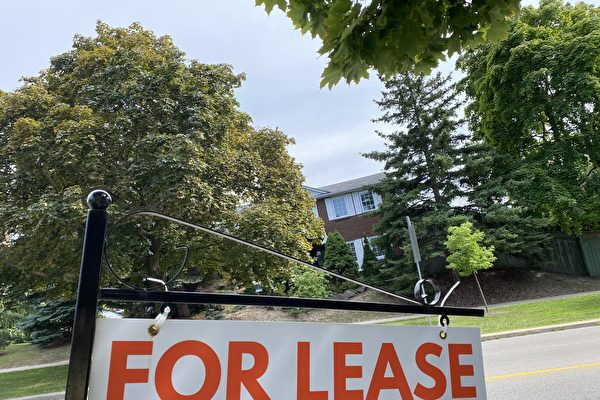

该报告称，这是过去31个月中，租金年增长率最小的一次。（楚方明/） 【2024年08月08日讯】（记者周行多伦多报导）由Rentals.ca和Urbanation联合发布的一份新报告显示，加拿大的平均租金7月升至2,201元，同比升幅5.9%。该报告称，这是过去31个月中，租金年增长率最小的一次。不过，7月的租金环比上涨0.8%，扭转了6月0.8%的跌幅。
7月份，专用出租公寓和共管公寓的租金环比上涨0.5%，平均为2,156元。同比则上涨了7.4%，主要原因是专用出租公寓的租金同比上涨了8.9%，平均为2,131元；共管公寓的租金涨幅仅为1.9%，但平均租金仍较高，达2,334元。
各省的情况，除安省和卑诗省外，所有省份的租金均录得同比上涨。
萨斯喀彻温省继续保持租金同比增长最快的地位，专用出租公寓和共管公寓租金同比升22.2%。不过，租金环比却有所下降，至1,331元，仍比全国平均水平2,156元低了38%。
主要大都市的情况，温哥华7月的租金连续第三个月呈上涨趋势，环比上涨1.9%，但同比下降了7.2%，平均租金为3,101元。在多伦多，租金环比上涨0.2%，同比下降了4.6%，平均租金为2,719元。
加拿大六大房市中，有五个房市的租金7月有所增长，环比平均升了0.9%。蒙特利尔则录得租金连续三个月下降，7月下降了0.5%，平均租金为2,003元。
埃德蒙顿在加拿大最大房市中，仍保持领先地位，租金同比涨幅最高，达14.3%，平均租金为1,579元。卡尔加里的租金同比上涨幅度持续放缓，7月为3.7%，这是2年多来的最低涨幅，平均租金为2,111元。渥太华租金同比涨幅排名第二，为4.1%，这是过去4个月来的最高年涨幅，平均租金为2,218元。
责任编辑：岳怡